ABOUT
BEER
SPIRITS
WINE
CONTACT
Val Mar Spirits & Fine Wines | SPIRITS
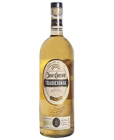
jose cuervo tradicional reposado 1.75 ml
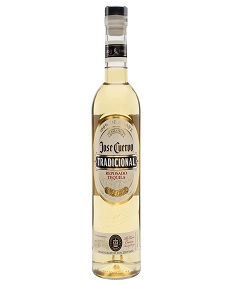
jose cuervo tradicional reposado 375 ml
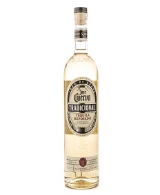
jose cuervo tradicional reposado 750 ml
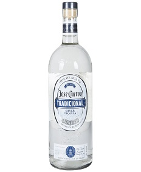
jose cuervo tradicional silver 1.75 ml
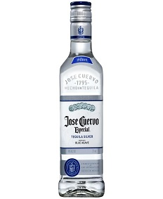
jose cuervo tradicional silver 375 ml
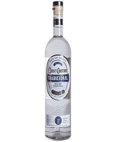
jose cuervo tradicional silver 750 ml
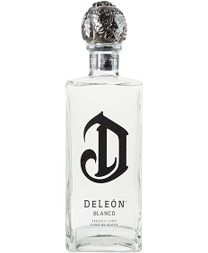
deleon blanco 750 ml
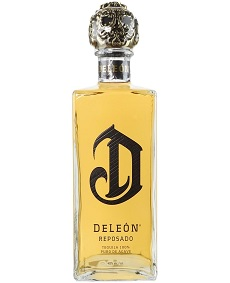
deleon reposado 750 ml
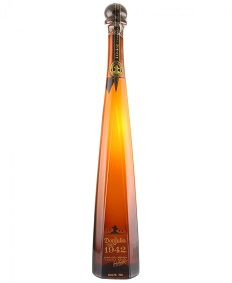
don julio 1942 750 ml
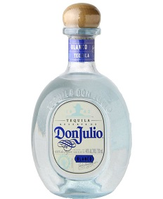
don julio blanco 750 ml
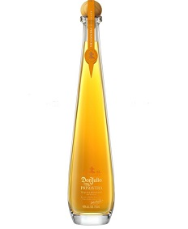
don julio primavera 750 ml
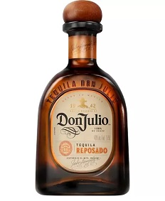
don julio reposado 1.75 ml
don julio reposado 750 ml
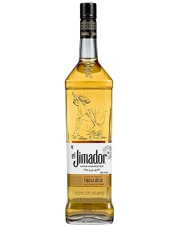
el jimador anejo
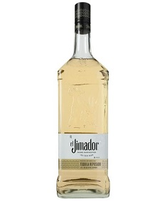
el jimador reposado 1.75 ml
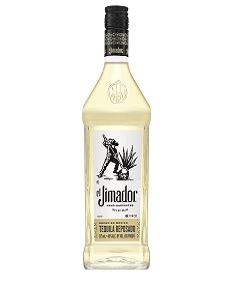
el jimador reposado 375 ml
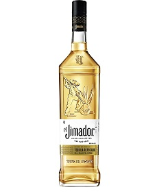
el jimador reposado 750 ml
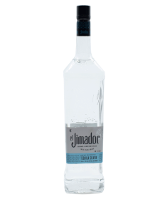
el jimador silver 1.75 ml
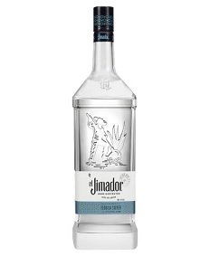
el jimador silver 375 ml
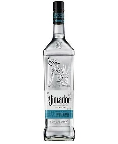
el jimador silver 750 ml
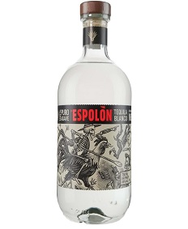
espolon blanco 750 ml
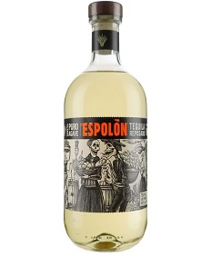
espolon reposado 750 ml
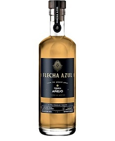
flecha azul anejo
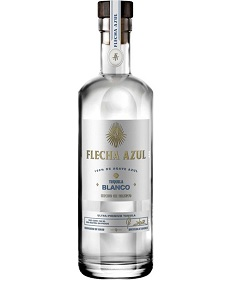
flecha azul blanco 750 ml
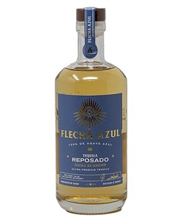
flecha azul reposado 750 ml
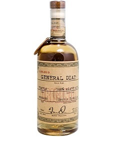
general diaz anejo 750 ml
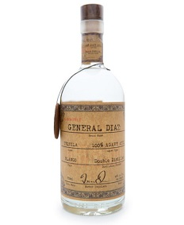
general diaz blanco 750 ml
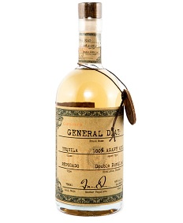
general diaz reposado 750 ml
gran coramino reposado cristalino
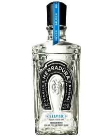
herradura blanco
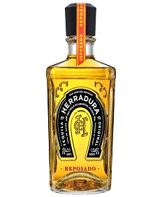
herradura reposado
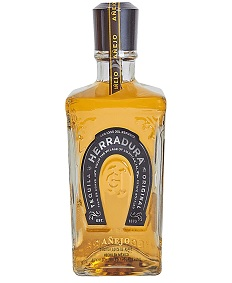
herradura anejo
«
<
11
12
13
14
15
>
»
— Don't be a stranger —
Keep in touch, and follow us via our social media channels below.
© Copyright 2022. | VAL MAR SPIRITS & FINE WINES, LLC. | ALL RIGHTS RESERVED